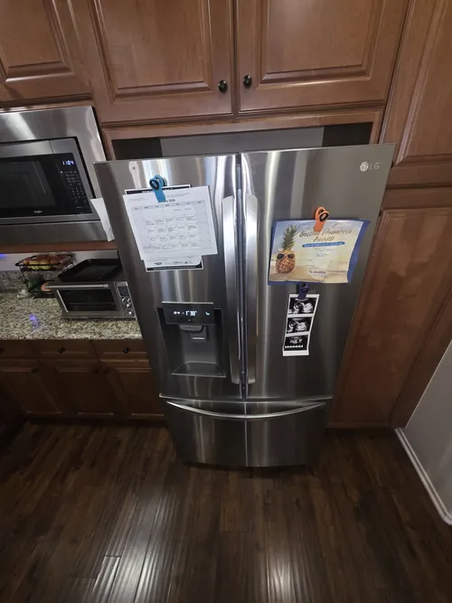

LG Refrigerator Repair: Most Common Reasons a Refrigerator Stops Cooling
A refrigerator that suddenly stops cooling is one of the most frustrating appliance problems a homeowner can experience. Beyond the inconvenience, cooling failures can quickly lead to spoiled food, wasted groceries, and unexpected repair expenses. Fortunately, most refrigerator cooling problems develop from a relatively small number of common causes. Understanding these issues can help homeowners recognize warning signs early and know when professional LG refrigerator repair may be necessary.
Modern LG refrigerators rely on multiple systems working together to maintain proper temperatures. Compressors, evaporator fans, condensers, sensors, control boards, airflow channels, and defrost components all play important roles in cooling performance. When one of these systems fails, the refrigerator may struggle to maintain safe food storage temperatures or stop cooling altogether.
One of the most common causes of cooling failure is a compressor related problem. The compressor is often described as the heart of the refrigerator because it circulates refrigerant through the cooling system. If the compressor cannot operate properly, cooling performance may decline significantly or stop completely. Symptoms may include warm refrigerator temperatures, unusual noises, excessive runtime, or a refrigerator that appears to be running but produces little or no cooling.

Airflow problems are another frequent cause of cooling issues. Many homeowners do not realize how important proper air circulation is inside a refrigerator. Evaporator fan motors move cold air throughout the appliance, helping maintain consistent temperatures in both refrigerator and freezer compartments. If a fan motor fails or airflow becomes restricted by frost buildup or blocked vents, cooling performance can quickly become uneven and unreliable.
Temperature sensor failures can also cause significant cooling problems. Modern LG refrigerators use multiple sensors to monitor operating conditions and communicate with electronic control systems. A faulty sensor may send incorrect information to the refrigerator’s control board, causing improper cooling cycles and unstable temperatures. Professional LG refrigerator repair often includes testing these sensors to verify accurate operation.
Electronic control board problems are becoming increasingly common as refrigerators become more advanced. Control boards regulate cooling functions, compressor operation, fan motors, defrost cycles, and communication between refrigerator systems. A malfunctioning control board may create symptoms that resemble compressor failures, airflow issues, or sensor problems. Accurate diagnostics are essential because multiple refrigerator issues can appear very similar from the outside.
Dirty condenser coils are another common cause of reduced cooling performance. Condenser coils release heat from the refrigeration system, allowing the appliance to operate efficiently. When coils become covered with dust, pet hair, or debris, heat transfer becomes less effective.
This forces the cooling system to work harder and may eventually result in poor cooling performance, increased energy consumption, and unnecessary strain on refrigerator components.Defrost system failures can also contribute to cooling problems. Most modern refrigerators automatically remove frost from cooling components during normal operation. If the defrost system stops functioning correctly, excessive frost can accumulate around evaporator coils and restrict airflow. Over time, this may prevent cold airfrom reaching food compartments and cause noticeable temperature increases throughout the refrigerator.
Damaged door gaskets often create cooling problems that homeowners overlook. A worn or cracked door seal allows warm air to enter the refrigerator continuously. This forces the cooling system to operate longer and can eventually create temperature instability, frost buildup, and excessive compressor workload. Simple gasket issues can sometimes create symptoms that resemble much larger refrigerator problems.
Water leaks, moisture buildup, and clogged drain systems may also affect refrigerator performance. Excess moisture can interfere with airflow, contribute to frost formation, and create conditions that reduce cooling efficiency. Addressing drainage issues early can help prevent additional refrigerator problems from developing.
Another important factor involves refrigerator placement and ventilation. Refrigerators require adequate airflow around the appliance to release heat properly. Units placed too close to walls, cabinets, or other obstacles may experience reduced efficiency and increased operating temperatures. Proper installation helps support reliable long term cooling performance.
Because modern refrigerators contain many interconnected systems, diagnosing cooling problems accurately requires more than simply replacing parts. Professional LG refrigerator repair focuses on identifying the root cause of cooling failure through systematic testing and inspection. This approach helps prevent unnecessary repairs while improving long term appliance reliability.
If your refrigerator is struggling to maintain temperature, running constantly, making unusual noises, or showing signs of cooling failure, early diagnostics can help prevent additional damage. Professional LG refrigerator repair provides the expertise, testing procedures, and technical knowledge needed to restore proper cooling performance and keep your appliance operating reliably for years to come.